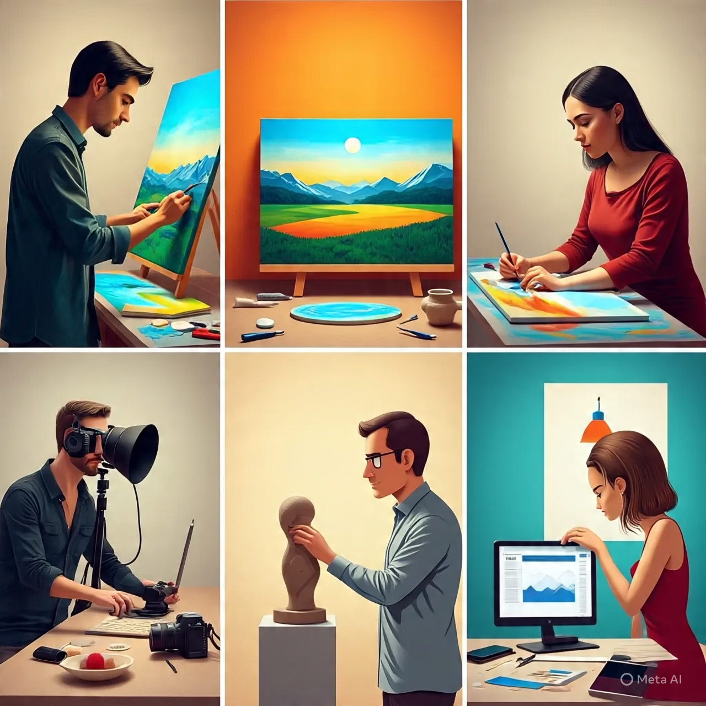
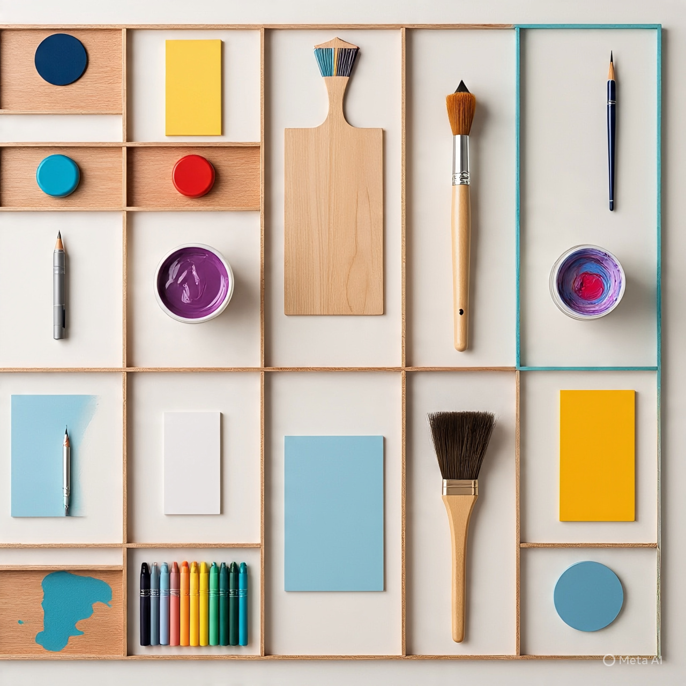

VISUAL ARTS
Introduction
Visual Arts are the types of art that we can see with our eyes. These are artworks that are visible and physical. We can touch them, look at them, and admire them. Unlike performing arts that are acted or sung, visual arts stay on surfaces like paper, wall, cloth, clay, or even screens.
Visual art is one of the oldest forms of art in human history. Even before people could write, they were already drawing and painting on cave walls using ash, blood, plant juice, and charcoal. These early pictures helped them to tell stories about their lives — like hunting, war, and worship.
Meaning of Visual Arts
Visual art is a creative activity that involves the use of materials like pencil, paint, clay, fabric, or tools to produce things that are beautiful, meaningful, or useful. It is an art that appeals to the sense of sight.
In other words, visual art is the art of creating something that you can see — a picture, a sculpture, a design, a painting, or a decorated object.
Branches of Visual Arts
Visual art is made up of many different branches or types. Each type uses different materials, techniques, and skills. Some of the major branches include:

- Drawing: This is the act of making lines, shapes, and pictures on a surface using pencils, charcoal, ink, or crayons. Drawing is the foundation of most artworks.
- Painting: This involves applying colours to a surface (like paper, canvas, or wall) using brushes, sponges, or fingers. It is used to decorate, express emotions, or tell stories with colour.
- Sculpture: This is the art of creating solid, three-dimensional forms from materials like clay, wood, metal, or stone. Sculptures can be round (like a statue) or flat (like a wall relief).
- Textile Design: This involves creating patterns and decorations on cloth or fabric. It includes traditional arts like tie and dye, batik, and fabric painting.
- Graphics and Illustration: This is the art of combining pictures, text, and symbols to pass messages. It includes poster making, logo design, comic drawings, book covers, and packaging.
- Crafts: These are handmade objects that are both useful and decorative. Examples are beadwork, pottery, weaving, leatherwork, and mat-making.
- Ceramics: This is the art of making objects out of clay and baking them in fire. It includes things like pots, bowls, cups, and decorative vases.
- Photography: This is the art of taking pictures with a camera to tell stories, record moments, or express emotions through images.
Importance of Visual Arts
- It allows people to express their feelings, thoughts, and ideas when words are not enough.
- It helps to beautify the environment and make life more pleasant.
- It teaches patience, concentration, and creativity.
- It helps in recording history, traditions, and culture through drawing and painting.
- It creates job opportunities for artists, designers, sculptors, decorators, and illustrators.
- It can be used to pass messages, especially in places where people may not be able to read.
- It helps children and students develop skills in observation, imagination, and design.
- It supports other areas like advertising, fashion, architecture, publishing, and entertainment.
Tools and Materials Used in Visual Arts
Visual artists use different tools and materials depending on the type of art they are working on. Some of the common materials include:

- Pencils, charcoal, chalk, and crayons for drawing
- Paint, brushes, palette, and canvas for painting.
- Clay, wood, metal, and stone for sculpture and ceramics
- Fabrics, dyes, and wax for textile design
- Beads, leather, thread, and needles for crafts
- Cameras and lighting for photography
- Rulers, markers, and cutting tools for graphic work
Examples of Visual Artworks Around Us
- Traditional wall paintings in villages.
- Sculptures at roundabouts or gates.
- Hand-painted signboards.
- Tie-and-dye clothes in markets.
- Church or mosque decoration.
- Calabash carvings and ornaments.
- Logo and emblem of your school.
Career Opportunities in Visual Arts
If you’re talented in visual arts, you can build a future in many fields. Some of the careers include:
- Fine artist (painter, sculptor).
- Graphic designer or illustrator.
- Fashion designer.
- Textile artist.
- Photographer.
- Interior decorator.
- Art teacher or lecturer.
- Cartoonist or comic book artist.
- Advert designer.